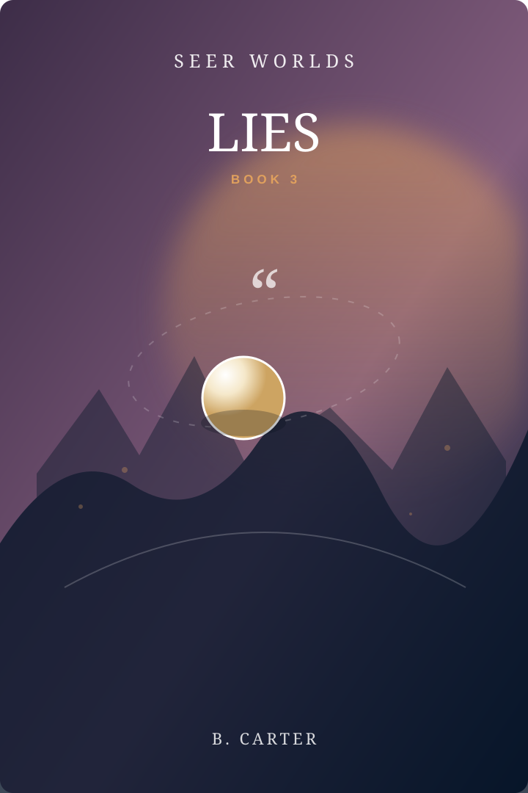

Seer Worlds · Book 03 · Ashet
LIES
A deliberate lie can change what it describes.

Book 03
LIES
A deliberate lie can change what it describes.
The Kesh can see speech, measure it, and sometimes watch a lie alter reality. Ilva once told a huge lie for a good reason. Everyone saw it. Nothing changed.
The question
How rare can something be before a whole society stops understanding it?Why this world matters
Each Seer Worlds book is complete on its own while also adding one piece to the Dot’s larger journey. The rule shapes ordinary life first; the mystery stays underneath the local story.